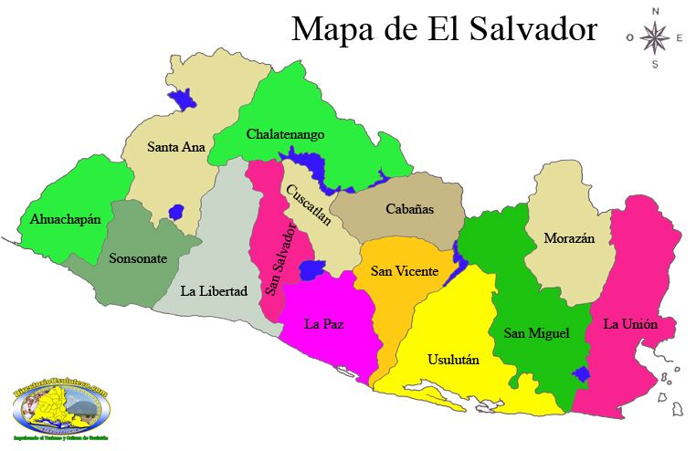
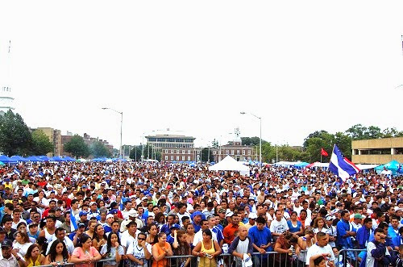
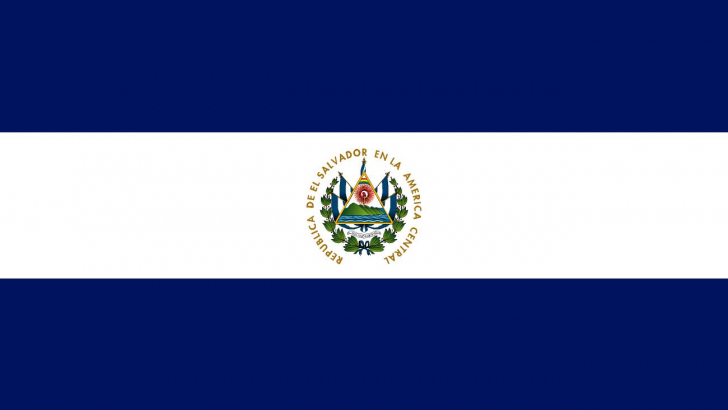
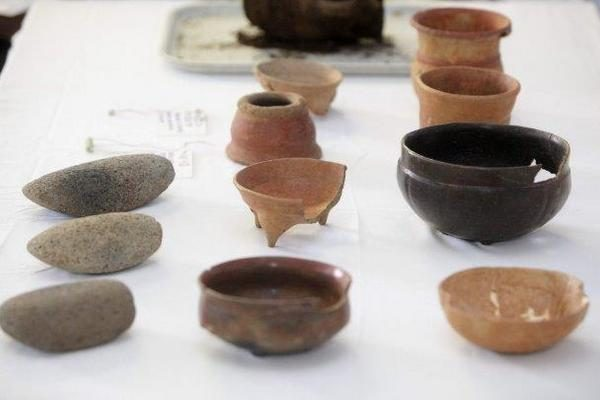
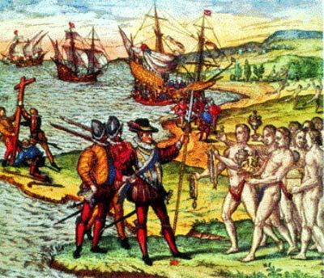
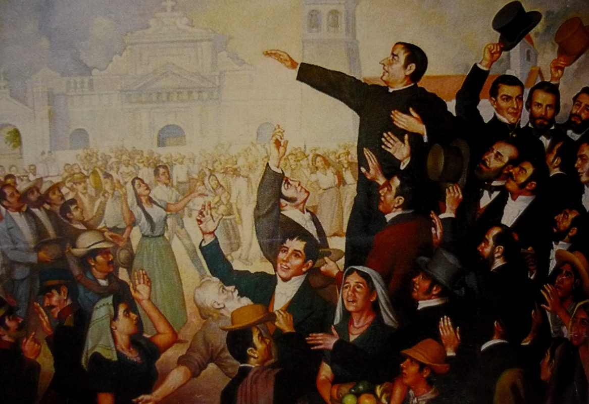
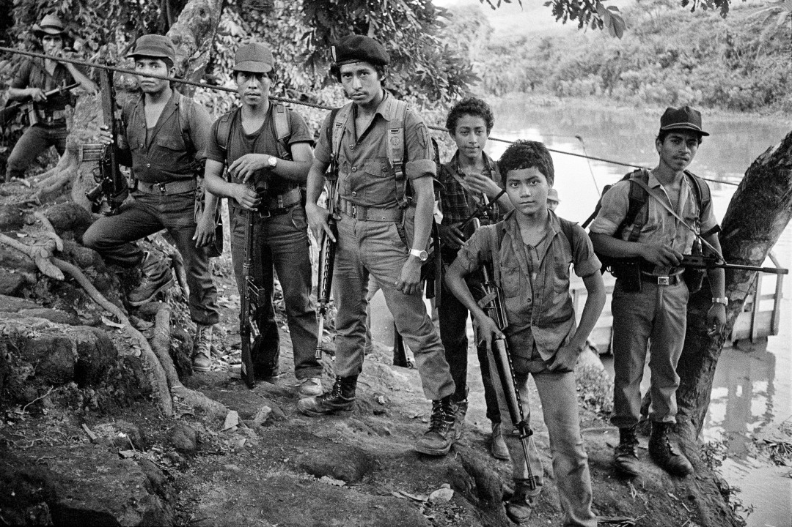
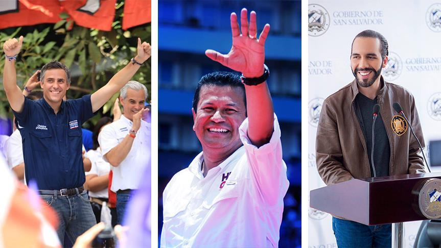
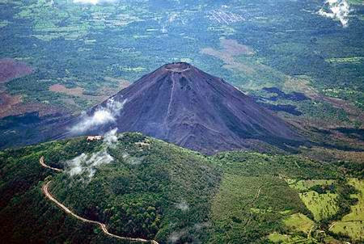

El Salvador Es un país soberano de América Central ubicado en el litoral del océano Pacífico por su densidad demográfica aproximada de 321.55 hab./km² es el país más poblado del continente americano, sin incluir algunas islas en el mar Caribe. Su clima es cálido tropical pero debido al contraste geográfico el clima puede variar.Posee una extención territorial de 21,041 km2.
 Posee población de 6,765,753 habitantes.
 BANDERA DE EL SALVADOR
 HISTORIA: Época Precolombina: El territorio salvadoreño forma parte del área de Mesoamérica, y se encuentra ubicado en una región que sirvió de paso de objetos e ideas a través del tiempo. Las primeras evidencias culturales en El Salvador se remontan a ocho mil años, justamente en el período arcaico (8000 a 1500 a. C.), época de grandes migraciones a diversas zonas mesoamericanas, una de ellas la costa del Pacífico del país. La época española: El año 1522, cinco navíos españoles partieron desde Panamá para explorar las costas del litoral pacífico. El piloto mayor era Andrés Niño quien bautizó al golfo de Fonseca y el 31 de mayo desembarcó en una isla a la que llamó "Petronila" (Meanguera). Para junio de 1524 el conquistador Pedro de Alvarado atravesó el río Paz con tropas españolas acompañadas de indios auxiliares, e inició el sometimiento de los nativos en el actual territorio salvadoreño. Los colonizadores establecieron en los años posteriores diversas poblaciones: San Salvador, erigida en 1525 pero que tuvo su asiento definitivo en 1545; San Miguel, cuyo primer asentamiento surgió en 1530; y la villa de la Trinidad (Sonsonate), fundada en 1553. Todo el territorio comprendería las Alcaldías Mayores de Sonsonate y San Salvador, ambas parte del Reino de Guatemala. Junto a la conquista española también se desarrolló el mestizaje, el proceso de evangelización católica, la enseñanza del idioma castellano, y el arribo de esclavos africanos. Por la escasez de oro y plata, el Reino no tenía la preponderancia de otras posesiones americanas, por lo que sustentó su economía en la agricultura. Independencia: Desde la primera década del siglo XIX, en las posesiones americanas de la corona española, comenzaban a surgir movimientos con inquietudes independentistas. San Salvador no era ajena a los sucesos, ya que la situación económica y política era desfavorable para los habitantes de la provincia. La élite local conformada por criollos y religiosos deseaban lograr la autonomía y sacudirse el dominio de la aristocracia guatemalteca, por lo que el 5 de noviembre de 1811 estalló una sublevación en contra de las autoridades europeas. El gobierno de la Capitanía logró mantener el control sobre los amotinados hasta el año 1821, cuando en la región se conoció la firma del Plan de Iguala en el Virreinato de Nueva España, y la proclamación de independencia de Ciudad Real; que motivó a los independentistas a presionar al Jefe Político Gabino Gaínza para que convocase a la Diputación Provincial y firmar el Acta de Independencia que tuvo lugar el 15 de septiembre. Guerra Civil: El ambiente de violencia política que se había vivido la década anterior contribuyó enormemente a la guerra civil que duraría 12 años (1980-1992). Fue un conflicto que militarmente se definió como una guerra de baja intensidad, o guerra popular prolongada, como la denominaban las fuerzas guerrilleras del FMLN y que costó la vida a más de 75 000 personas entre muertos y desaparecidos. Fin del Bipartidismo: El 3 de febrero de 2019, el político, empresario y exalcalde (FMLN) de San Salvador, Nayib Bukele, del partido Gran Alianza por la Unidad Nacional (GANA) y en alianza con Nuevas Ideas, ganó las elección presidencial en primera vuelta, junto con el también político Félix Ulloa para el período presidencial que comenzó el 1 de junio de 2019 y concluirá el 1 de junio de 2024. La victoria de GANA en las elecciones rompió con el bipartidismo en la alternancia en el poder entre ARENA y FMLN, que gobernaron en los últimos treinta años. GEOGRAFÍA: El Salvador ejerce también soberanía y jurisdicción sobre el mar, el subsuelo y el lecho marinos hasta una distancia de 200 millas marinas contadas desde la línea de más baja marea. La demarcación de la CIJ tuvo como resultado una gran cantidad de habitantes con doble nacionalidad y muchos ciudadanos que siguen considerándose salvadoreños, siendo contados los hondureños, lo que genera problemas debido a la doble nacionalidad a la hora de votar y complicaciones a la hora de buscar asistencia pública, dado que las instituciones hondureñas se encuentran alejadas de estas zonas y las personas siguen acercándose a las instituciones salvadoreñas. El país se encuentra limitado al norte y al noreste por la República de Honduras; al este y al sureste por el golfo de Fonseca, que lo separa de la República de Nicaragua; al sur por el océano Pacífico; y al oeste y al noroeste por Guatemala. El Salvador se compone por los siguientes Departamentos: